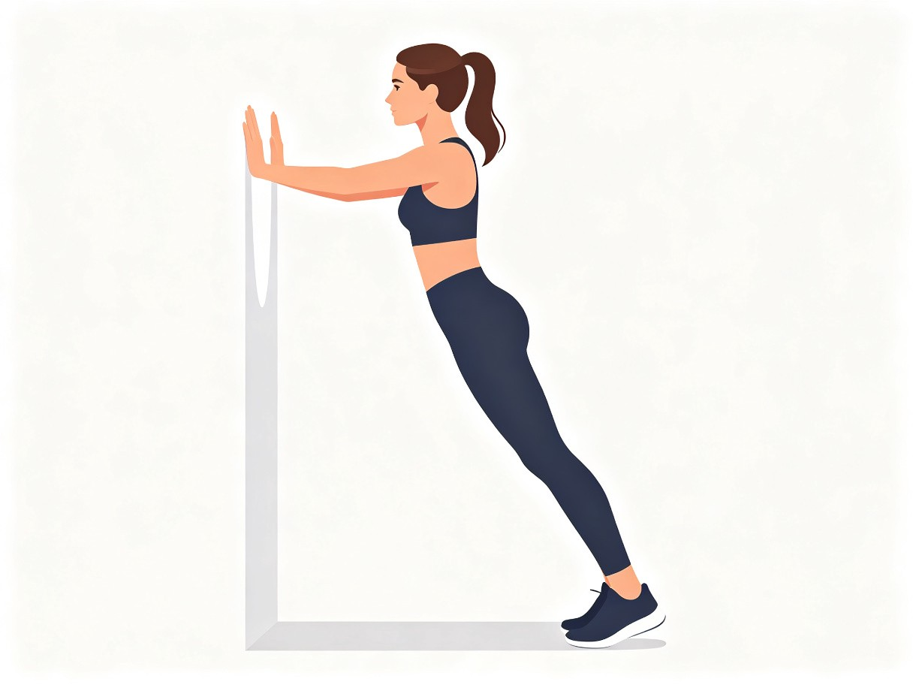
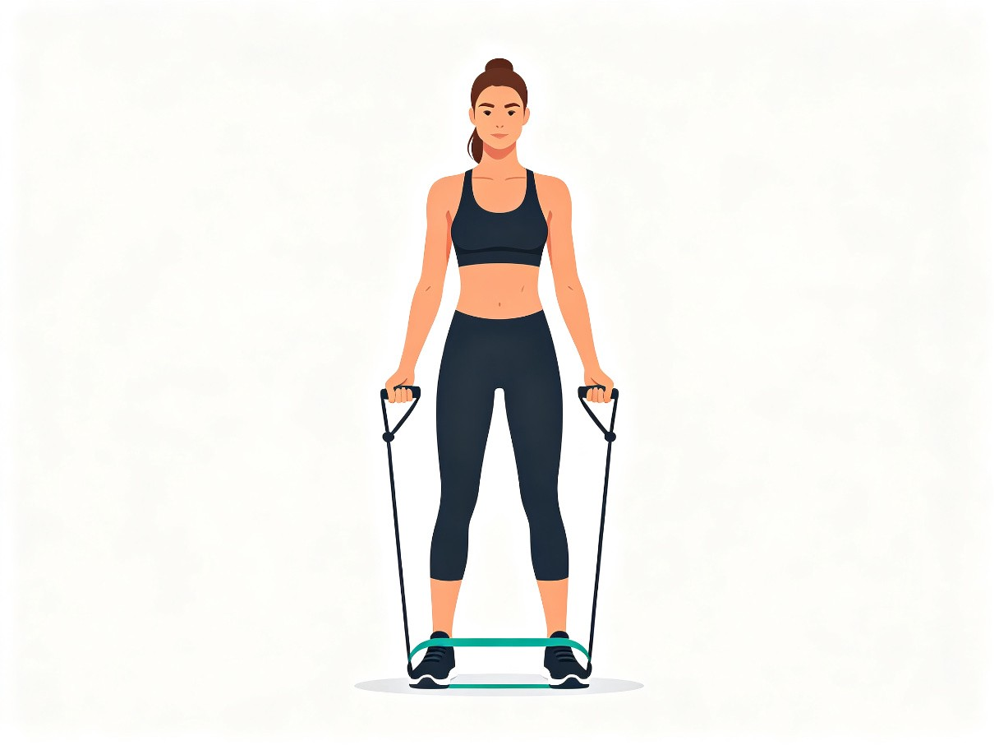
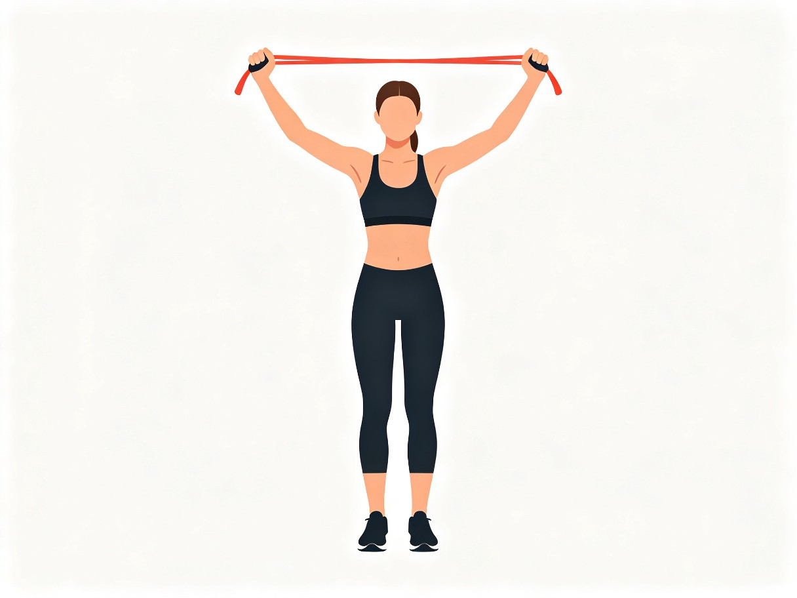
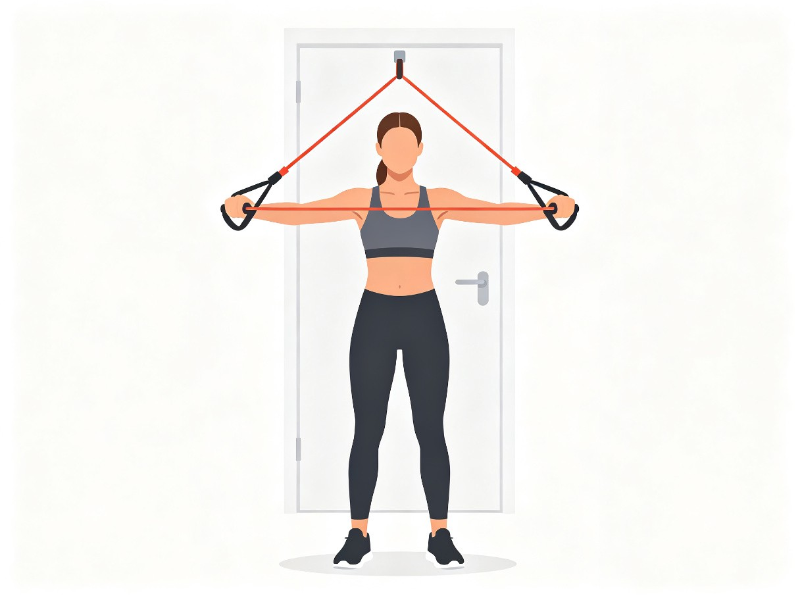
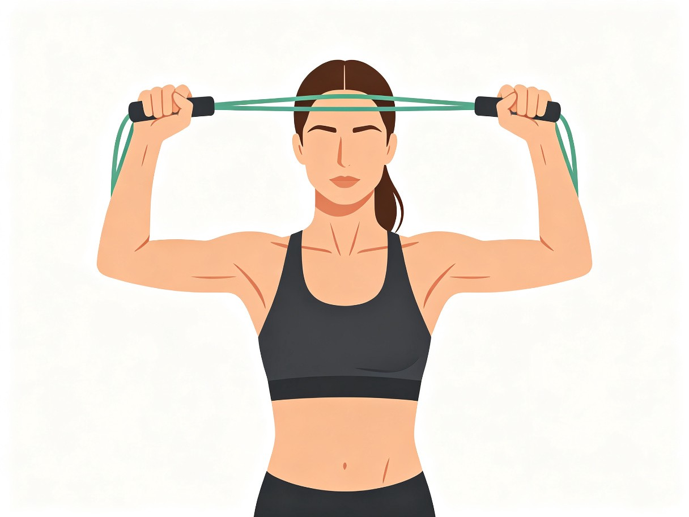
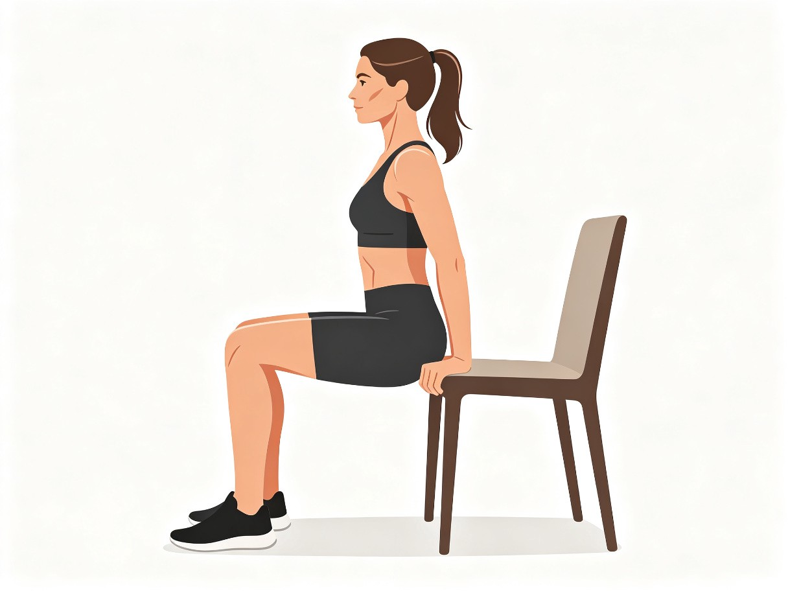
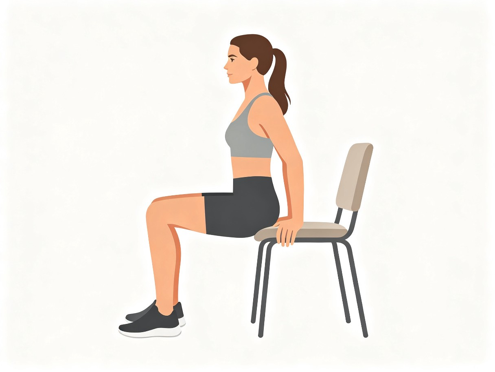

📋 每次训练结构（30分钟）
热身激活
手臂绕环前后各15次、肩部环绕、弹力带拉开15次、颈部缓慢活动，提升体温预防受伤
正式训练
按下方计划做4个动作，每个动作3组，组间休息60-90秒，专注动作质量
拉伸放松
胸肌门框拉伸、肩部拉伸、颈部拉伸、婴儿式放松，每个部位保持30秒
📈 三阶段渐进计划
动作一：墙壁俯卧撑
胸部 肩前侧 手臂后侧
📝 分步讲解：
✅ 正确姿势：
身体从头到脚一条线；手肘约45度打开；动作缓慢有控制；推起时呼气
❌ 常见错误：
塌腰撅屁股；只动脑袋身体不动；手肘张太开成90度；动作太快
动作二：弹力带侧平举
肩中束（宽肩关键！）

📝 分步讲解：
✅ 正确姿势：
肩膀下沉不耸肩；手肘微屈；抬到肩高即可；慢举慢放
❌ 常见错误：
耸肩（肩膀碰到耳朵）；抬太高超过肩膀；身体晃动借力；放下太快
动作三：弹力带面拉
肩后束 改善圆肩神器！

📝 分步讲解：
✅ 正确姿势：
手肘抬高外展；拉到额头两侧；肩胛骨向后夹紧；身体直立不后仰
❌ 常见错误：
手肘往下掉；只拉到胸口；身体后仰借力；耸肩
动作四：椅子臂屈伸
手臂后侧（告别拜拜肉）

📝 分步讲解：
✅ 正确姿势：
手肘指向后方；身体靠近椅子；肩膀下沉；动作缓慢
❌ 常见错误：
手肘向外张开；身体离椅子太远；下降太低伤肩膀；耸肩
✨ 针对性体态改善（每天都可以做！）
🎯 圆肩改善
- ✓ 多做面拉、划船类动作，强化后背和肩后束
- ✓ 胸肌门框拉伸：站在门框边，手臂弯曲90度贴门框，身体慢慢向前转，感受胸口和肩膀前侧拉伸，保持30秒×3组
- ✓ 日常提醒：坐姿时肩膀向后向下沉，不要含胸，电脑屏幕垫高至眼睛高度
🎯 头前伸改善
- ✓ 靠墙收下巴：后脑勺、肩膀、臀部贴墙，下巴水平向后收（像做双下巴），感受脖子后侧发力，保持1分钟×3组
- ✓ 颈部拉伸：头向一侧侧屈，手轻轻拉头辅助，每侧保持20秒；慢慢左右转头到最大角度
- ✓ 看手机时把手机举高到眼睛高度，不要低头；用电脑时屏幕上缘与眼睛平齐
🎯 锁骨清晰/肩颈线条
- ✓ 肩中束训练（侧平举）让肩膀变宽变圆润，锁骨自然更明显更好看
- ✓ 斜方肌放松：耸肩到最高位置然后用力沉肩向下，15次；经常按摩颈部两侧紧张的肌肉
- ✓ 配合饮食控制和偶尔有氧（快走、慢跑、跳绳）减脂，线条会更清晰
🎯 手臂紧致
- ✓ 三头肌训练（椅子臂屈伸）是告别拜拜肉的关键！女生手臂后侧最容易松弛
- ✓ 二头肌训练让手臂前侧有紧致线条，不会松松垮垮
- ✓ 不要怕长肌肉！女生睾酮水平低，力量训练只会紧致有线条，不会练成夸张肌肉块
📅 每周安排建议
💡 给零基础训练者的重要建议
🔥 关于重量
选择能做完规定次数但最后2-3次感觉吃力的重量。太轻没效果，太重容易受伤变形。从轻重量开始，动作标准比重量重要。
😴 休息很重要
肌肉是在休息时生长的，不是训练时！保证每天7-8小时睡眠，训练日之间给肌肉48小时休息时间。
🍽️ 饮食配合
想长肌肉要适当多吃蛋白质：每天1-2个鸡蛋、一杯牛奶/酸奶、肉类/鱼虾/豆腐。不用节食！正常吃饭，蛋白质足够就好。
📸 记录变化
每2周穿同样的衣服在同样光线下拍一次对比照（正面、侧面）。体型变化比体重数字重要得多，不要天天称重。
⏰ 坚持是关键
前4周可能看不到明显外观变化，但你的神经和肌肉在学习动作模式！一般8-12周会看到明显效果，不要轻易放弃。
❌ 不要怕"变壮"
女生没有男生的激素水平，力量训练只会让你紧致有线条——肩膀变宽显腰细、手臂变紧、穿衣服更好看！
💪 记住：动作做对比做重更重要！开始行动吧，你可以的！